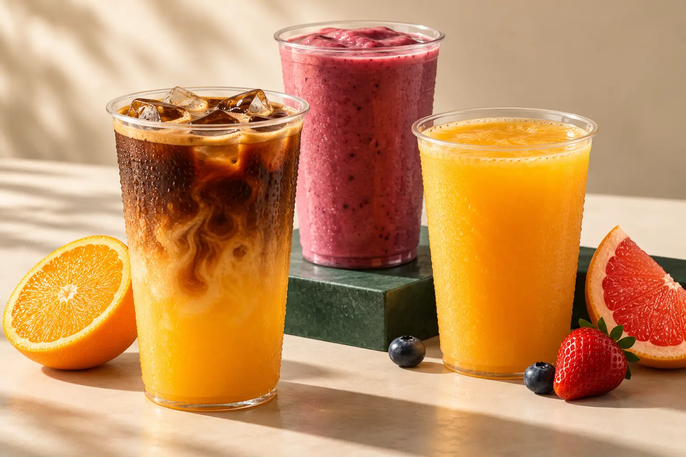

ОНЛАЙН-МЕНЮ СПОРТБАРА
ВКУС
ТВОЕГО
РИТМА.
Загляни до тренировки. Останься после.
Любимые напитки в «Линии спорта».
Одно меню для всех трёх клубов.

ПОСМОТРИ. ПОПРОБУЙ. ПОВТОРИ.
ВКУСНО
В ДВИЖЕНИИ.
Фрукты, ягоды, кофе и карамель.
Уже хочется попробовать?
Ягодный смузи
300 ₽Цитрусовый фреш
320 ₽Бамбл-кофе
300 ₽Листай видео вправо
ТРИ КЛУБА. ОДНО МЕНЮ.
ОСТАНЬСЯ
НА ВКУСНОЕ.
Смузи с фруктами, прохладный фреш или чашка кофе. Выбирай любимое и добавляй приятную паузу в свой день.
Во всех трёх клубах действует одно меню. Закажи на баре — до тренировки, после неё или просто по настроению.
Адреса клубов ↗